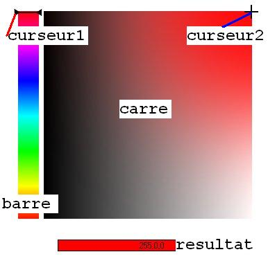
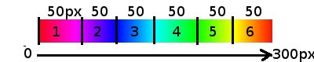
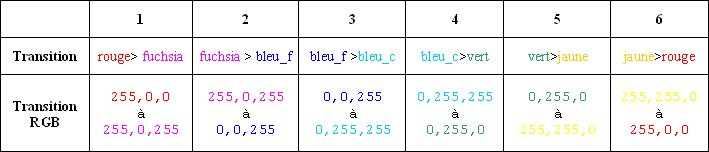
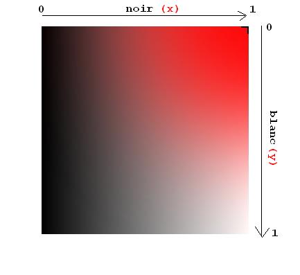

Dans ce tutoriel, vous allez apprendre à faire une palette de couleurs pour votre site web ; c'est un peu normal, vu le titre :p . Elle vous permettra de proposer un large panel de couleurs à vos visiteurs pour par exemple personnaliser la couleur du texte. Enfin, vous lui trouverez bien une utilité ^^ . Et puis ce sera un bon entraînement en Javascript : donc vous avez tout à y gagner ! :D
Vous mettrez tout le code dans un même fichier palette.html Commençons par le corps du fichier (ou BODY) :
<script type="text/javascript">
// ici, nous glisserons le code plus tard
</script>
<style type="text/css">
/* ici, nous glisserons le code plus tard aussi ^^ */
</style>
<body>
<div id="barre" class="skin_barre" onmousedown="clique('barre')"> </div>
<div id="curseur1" class="skin_curseur1" onmousedown="clique('barre')"> </div>
<div id="carre" class="skin_carre" onmousedown="clique('carre')"> </div>
<div id="curseur2" class="skin_curseur2" onmousedown="clique('carre')"> </div>
<form>
<input type="text" id="resultat" class="skin_resultat" size=20 name="affichage_couleur" value="255,0,0" />
</form>
</body>
Chaque élément de la palette sera un div, excepté la case affichant la couleur qui sera un input.
ID
Voici un schéma pour vous représenter chaque div par son id:

Class
Voici les styles CSS à utiliser pour mettre en forme la palette de couleurs :
<style type="text/css">
.skin_barre /* on reprend le nom qu'on a mis dans 'class=' */
{
width:30px;
height:300px;
/* on définit la taille du div (celle de l'image) */
top:20px;
left:23px;
/* et sa position initiale */
position:absolute;
/* le div n'est plus fixe mais libre */
background-image:url('degrade.jpg');
/* on définit ici l'image à afficher dans le div */
cursor:s-resize;
/* et enfin on définit le curseur à afficher lorsque la souris passe sur ce div */
}
/* ===== de même pour les autres ===== */
.skin_curseur1
{
width:45px;
height:15px;
position:absolute;
top:12px;
left:15px;
cursor:s-resize;
background-image:url('curseur1.png');
}
.skin_carre
{
width:300px;
height:300px;
position:absolute;
top:20px;left:60px;
cursor:move;
background-color:red; /* on définit la couleur initiale du carré */
background-image:url('degrade n-b.png');
}
.skin_curseur2
{
width:20px;
height:20px;
position:absolute;
top:10px;
left:350px;
cursor:move;
background-image:url('curseur2.png');
}
.skin_resultat
{
position:absolute;
top:330px;
left:60px;
border:1px solid black; /* dessine un cadre noir autour du 'input' et d'un pixel d'épaisseur */
background-color:red;
text-align:center; /* on aligne le texte au centre */
}
</style>
OnMouseDown
Et le onmousedown="" nous permet d'appeler des fonctions Javascript : ici, c'est pour déplacer les curseurs. Ne vous inquiétez pas : on va le voir après.
Nous allons maintenant nous occuper du code Javascript.
Initialisation des variables
On initialise les variables dont nous aurons besoin.
var clic=false;
//Cette variable nous indique si l'utilisateur clique sur la barre.
var clic2=false;
//Cette variable nous indique si l'utilisateur clique sur le carré.
var r=255,g=0,b=0;
//Variables qui stockeront la couleur en rgb.
var r_1=255,g_1=0,b_1=0;
// Variables secondaires rgb.
var blanc=0,noir=1;
// Le pourcentage de noir et de blanc entre 0 et 1 appliqué à la couleur (ici, pour le noir, 1 signifie qu'il n'y en aura pas, et 0 totalement : c'est l'inverse)
var x=360,y=20;
//position initiale de curseur2 (dans le carré).
La fonction clique()
// ... (tout le code précédemment)
function clique(objet)
{
if(objet=="barre") // si l'utilisateur clique sur la barre ...
{
clic=true; // ...alors on met true (vrai) à clic
}
else // sinon l'utilisateur clique sur le carré ...
{
clic2=true; // ...alors on met true (vrai) à clic2
}
}
La fonction position()
// ...
function position(axe,event)
{
// event contient les évènements de la page (on s'en sert pour la position du curseur)
var e = event || window.event;
// on copie les évènements dans e : il y a des manières différentes de récupérer les événements selon le navigateur
if(axe=="x") //si on demande x
{
var rep=e.clientX; // position x de la souris.
}
else // sinon y
{
var rep=e.clientY; // position y de la souris.
}
return rep;
// on renvoie la valeur de rep.
}
Maintenant, on peut commencer le plus gros du travail. :soleil:
Les fonctions calcul() et afficher()
C'est avec ces deux fonctions qu'on calculera et affichera la couleur en utilisant les coordonnées des 2 curseurs.
// ...
document.onmousemove=calcul;
// lorsque la souris bouge n'importe où dans le document, on appelle la fonction calcul.
document.onmousedown=calcul;
// lorsque la souris clique n'importe où dans le document, on appelle la fonction calcul.
document.onmouseup=function() { clic=false;clic2=false; }
// si l'utilisateur relâche le bouton de la souris, alors les variables clic et clic2 redeviennent fausses (false).
Avant de vous étaler la grande et incompréhensible :-° fonction calcul(), je vais vous expliquer le principe :) .
Choix de la couleur
Regardez bien cette image :

Il y a au total 6 sous-dégradés.
Donc 6 transitions.

Si la souris de l'utilisateur se situe dans le sous-dégradé n°6, on calculera la variable G (car il n'y a qu'elle qui varie ici) :
255,255,0
255,0,0
Et par exemple si la souris se trouve aux 50 % du n°6, eh bien G = 255/2 = 128 (environ). Et logiquement, 255,128,0 est bien orange. En quelque sorte, c'est le milieu entre le rouge et le jaune.
Ce n'est pas très simple, je l'avoue :p , mais essayez avec d'autres exemples et ça va rentrer !
Ajout de noir et de blanc

En RGB, le noir est déterminé par 0,0,0 et le blanc par 255,255,255. Plus on augmente une variable, plus elle se rapproche du blanc, et inversement pour le noir. C'est de cette manière qu'on pourra éclaircir ou assombrir la couleur.
La position du curseur dans le carré :
x représentera le noir ;
y représentera le blanc.
Allez, vous allez tenir le coup ! Finissons-en avec ces 2 abominables fonctions. :pirate:
Structure
Commençons par voir la structure de calcul() :
// ...
function calcul(event) // event contient les événements de la page (on s'en sert pour la position du curseur).
{
if(clic && position('y',event)<=320 && position('y',event)>=20) // on appelle position() pour connaître la position de la souris.
{
// BLOC 1
afficher(); // fonction permettant d'afficher la couleur courante dans le rectangle (input text) 'resultat'.
}
if(clic2) // si l'utilisateur clique sur le carré...
{
if(position('y',event)>20 && position('y',event)<320)
{
// BLOC 2
}
if(position('x',event)>60 && position('x',event)<360)
{
// BLOC 3
}
afficher(); // fonction permettant d'afficher la couleur courante dans le rectangle (input text) 'resultat'.
}
}
function afficher() // ici on gère l'affichage de la couleur
{
// BLOC 4
}
Bon : allons-y par étape (bloc), sinon on ne s'y retrouvera plus. :D :
BLOC 1
Ce bloc s'exécute lorsque l'utilisateur clique sur la barre. Et que le curseur reste dans les limites de celle-ci : la barre commence à y=20px et fait 300 px, donc fini à y=320px.
document.getElementById("curseur1").style.top=position('y',event)-7;
//on change la position du curseur (top) en même temps que la souris.
// c'est à partir d'ici qu'on regarde sur quel sixième la souris se trouve.
if((position('y',event)-20)<=50) // 1/6 (50px)
{
r=255;
g=0;
b=Math.round((position('y',event)-20)*255/50);
}
else if((position('y',event)-20)<=100) // 2/6 (100px)
{
r=Math.round(255-((position('y',event)-70)*255/50));
g=0;
b=255;
}
else if((position('y',event)-20)<=150) // 3/6 (150px)
{
r=0;
g=Math.round((position('y',event)-120)*255/50);
b=255;
}
else if((position('y',event)-20)<=200) // 4/6 (200px)
{
r=0;
g=255;
b=Math.round(255-((position('y',event)-170)*255/50));
}
else if((position('y',event)-20)<=250) // 5/6 (250px)
{
r=Math.round((position('y',event)-220)*255/50);
g=255;
b=0;
}
else if((position('y',event)-20)<=300) // 6/6 (300px)
{
r=255;
g=Math.round(255-((position('y',event)-270)*255/50));
b=0;
}
document.getElementById("carre").style.backgroundColor="rgb("+r+","+g+","+b+")";
// On change la couleur du carré. On voit après (grâce à degrade n-b.png) le dégradé de la couleur vers le blanc et le noir.
Dans chaque sixième, on ne modifie qu'une seule variable (se référer au tableau). Prenons l'exemple du 1er :
if((position('y',event)-20)<=50)
si la position y de la souris (-20 car la barre commence à top:20px) est plus petite que 50 px, donc plus petit que 1/6...
Il n'y a que la variable b qui varie (les autres sont constantes), et on la définit comme ceci :
b=Math.round((position('y',event)-20)*255/50);
// Math.round renvoie l arrondi
On fait le produit en croix pour avoir b.
position(y)
50
b
255
b = position(y) * 255 / 50.
Plus y se rapproche de 50, plus b se rapproche de 255.
Puis dans le 2e : (2/6).
else if((position('y',event)-20)<=100)
//si la position y de la souris est plus petite que 100 px, donc plus petite que 2/6...
r=Math.round(255-((position('y',event)-70)*255/50));
//position('y',event)-70 car on retire encore les 20 px et on inclut les 50 px précédents.
Ici, r=255 et on veut le diminuer. Plus y se rapproche de 100, plus r se rapproche de 0.
Produit en croix : r = position (y) * 255/50. >> Mais on veut que ça diminue, donc on retire le résultat au maximum : r = 255 - (position (y) *255/50).
Et on fait la même chose pour le reste en alternant toujours "augmentation", "diminution".
BLOC 2
Ce bloc s'exécute si la souris reste dans ses limites verticales (le carré commence à y=20px et fait 300 px de hauteur, donc fini à y=320px).
document.getElementById("curseur2").style.top=(position('y',event)-10)+"px";
// on déplace curseur2 et on lui retire son milieu (comme pour curseur 1)
y=position('y',event);
// on enregistre la position y de la souris dans la variable 'y' pour que la fonction afficher() puisse faire ces calculs.
BLOC 3
Ce bloc s'exécute si la souris reste dans ses limites horizontales (le carré commence à x=60px (left) et fait 300 px de largeur, donc finit à x=360px).
document.getElementById("curseur2").style.left=(position('x',event)-10)+"px";
// on déplace curseur2 et on lui retire son milieu (comme pour curseur 1)
x=position('x',event);
// on enregistre la position x de la souris dans la variable 'x' pour que la fonction afficher() puisse faire ces calculs.
BLOC 4
Et enfin la fonction afficher() :
noir=Math.round( (x-60)*100/300)/100;
// on calcule le pourcentage de noir appliqué à la couleur en divisant la position 'x' du curseur dans le carré par sa largeur (-60 car le carré commence à left:60px)
blanc=Math.round((y-20)*100/300)/100;
// on calcule le pourcentage de blanc appliqué à la couleur en divisant la position 'y' du curseur dans le carré par sa hauteur (-20 car le carré commence à top:20px)
//on applique le blanc aux 3 couleurs :
r_1=Math.round((255-r)*blanc)+r;
g_1=Math.round((255-g)*blanc)+g;
b_1=Math.round((255-b)*blanc)+b;
// on applique le noir aux 3 couleurs :
r_1=Math.round(r_1*noir);
g_1=Math.round(g_1*noir);
b_1=Math.round(b_1*noir);
//on affiche la couleur en rgb dans le champ resultat
document.getElementById("resultat").value=r_1+","+g_1+","+b_1;
//on applique la couleur rgb au champ resultat
document.getElementById('resultat').style.backgroundColor="rgb("+r_1+","+g_1+","+b_1+")";
Indication : le Math.round( XX * 100) / 100 permet de garder 2 chiffres après la virgule.
Bon, maintenant, ce serait peut-être bien de l'adapter pour un site, non ?
Ce n'est pas bien dur : on va juste rajouter quelques lignes dans palette.html.
Dans le corps
<body>
<!-- ...(code précédent du body)... -->
<!-- On apporte les modifications dans la balise form -->
<form>
<input type="text" id="resultat" class="skin_resultat" size=20 name="affichage_couleur" value="255,0,0" />
<!-- on ajoute un bouton pour valider la couleur -->
<input type="button" value=" OK " onclick="valider()" class="skin_bouton_OK" />
</form>
</body>
// ...
function valider()
{
//on fait appel à une fonction dans la page principale pour transmettre le contenu de resultat.
window.opener.valid_couleur(document.getElementById("resultat").value);
window.close();
//on ferme la palette
}
Sur la page du site
Ajoutez ces fonctions dans le code Javascript :
// on initialise 2 variables qui nous permettront d'envoyer la couleur dans le bon champ.
champ="";
formulaire="";
function ouvrir_palette(formulaire_recupere,champ_recupere)
{
formulaire=formulaire_recupere;
champ=champ_recupere;
ma_palette=window.open("palette.html","Palette_de_couleur","height=380,width=400,status=0, scrollbars=0,,menubar=0");
// on ouvre la palette
}
function valid_couleur(couleur) //fonction appelée lorsqu'on valide la palette. On récupère la couleur.
{
document.forms[formulaire].elements[champ].value=couleur;
}
Et voilà : maintenant, lorsque vous voulez demander une couleur, vous avez juste à mettre :
<input type="button" value="Ouvrir la palette" onclick="ouvrir_palette('nomduformulaire','nomduchamp')" />
Vous aurez remarqué que l'output est en RGB. Ce format n'est pas très courant sur le web. Je vais donc vous proposer ici de faire l'output en hexadécimal.
Il va donc falloir transformer chaque variable en hexadécimal :
255,255,255 FFFFFF
Pour obtenir l'hexadécimal à partir du décimal, nous allons procéder ainsi (attention, ce n'est pas comme en maths) :
16 * X + Y = decimal X = entier( decimal / 16 ) Y = decimal % 16 (% : permet de récupérer le reste de la division)
>> hexadécimal : XY
Donc, pour 255 :
entier( 255 / 16 ) = X 255 % 16 = Y (%: permet de récupérer le reste de la division)
X=15 Y=15
15 (hexa) > F
Alors 255 vaut FF.
Maintenant que vous avez le principe en tête, on peut commencer le code. C'est dans la fonction afficher() qu'on apporte des modifications :
function afficher() // ici on gère l'affichage de la couleur
{
noir=Math.round( (x-60)*100/300)/100;
blanc=Math.round((y-20)*100/300)/100;
r_1=Math.round((255-r)*blanc)+r;
g_1=Math.round((255-g)*blanc)+g;
b_1=Math.round((255-b)*blanc)+b;
r_1=Math.round(r_1*noir);
g_1=Math.round(g_1*noir);
b_1=Math.round(b_1*noir);
// --modification--
r_hexa = hexadecimal( Math.floor(r_1 /16) ) + hexadecimal( r_1 % 16 );
g_hexa = hexadecimal( Math.floor(g_1 /16) ) + hexadecimal( g_1 % 16 );
b_hexa = hexadecimal( Math.floor(b_1 /16) ) + hexadecimal( b_1 % 16 );
document.getElementById("resultat").value = "#" + r_hexa + g_hexa + b_hexa;
// --fin modification--
document.getElementById('resultat').style.backgroundColor="rgb("+r_1+","+g_1+","+b_1+")";
}
// Et une nouvelle fonction
function hexadecimal(nombre)
{
if(nombre < 10)
{
return nombre.toString(); // le nombre en chaîne de caractères.
}
else
{
switch (nombre)
{
case 10:
return "A";
break;
case 11:
return "B";
break;
case 12:
return "C";
break;
case 13:
return "D";
break;
case 14:
return "E";
break;
case 15:
return "F";
break;
}
}
}
Math.floor() : fonction javascript renvoyant l'entier.
N'oubliez pas aussi de modifier la valeur initiale de resultat (qui est 255,0,0) :
Great !! Maintenant, l'output est en hexadécimal, c'est beaucoup mieux :D .
Information pour les utilisateurs d'Internet Explorer 6 : cette version d'IE gère très mal la transparence des .png : on ne voit pas le dégradé noir - blanc - couleur. Je vous donne donc ce lien où vous trouverez la solution pour y remédier :) .
Eh bien voilà, ce tuto est fini : j'espère que vous avez réussi à comprendre le script un peu délicat. Maintenant, vous avez une belle palette ;) . À vous de jouer pour l'adapter.
{kind=link}
{kind=link}
{kind=link}
{kind=link}